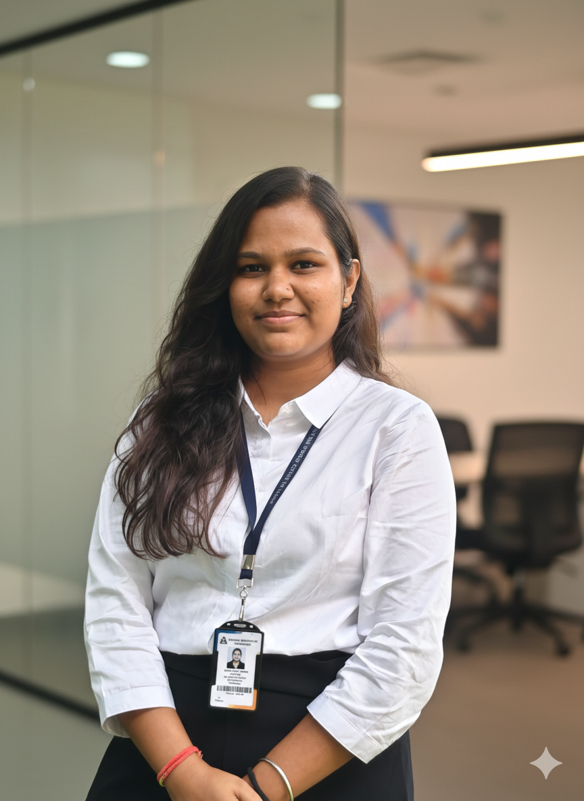

Biotechnology graduate with hands-on experience in molecular diagnostics, molecular biology and bioinformatics.
Explore My Work Download ResumeI am a Biotechnology graduate from Acharya Institute of Technology, Bengaluru, with an interest in molecular diagnostics, vaccine development and life science research.
I have hands-on experience with multiplex PCR, RNA isolation, agarose gel electrophoresis and laboratory techniques, along with exposure to bioinformatics and computational biology.
90-Day Internship
Worked on molecular diagnostic techniques including multiplex PCR, RNA isolation and agarose gel electrophoresis.
Also assisted in chitosan nanoparticle synthesis and observed qPCR, ELISA and SDS-PAGE techniques.
Classification of ALL and AML using leukemia gene expression microarray data with Random Forest and SVM.
Performed preprocessing, visualization and classification performance evaluation.
Studied the antimicrobial potential of Ficus religiosa extracts against bacterial soft rot pathogens using in-vitro and molecular docking approaches.
Studied potential inhibitors of PCSK9-mediated LDL receptor degradation using molecular docking.
Interested in biotechnology, molecular diagnostics and life science research.
📧 nidhinidode@gmail.com